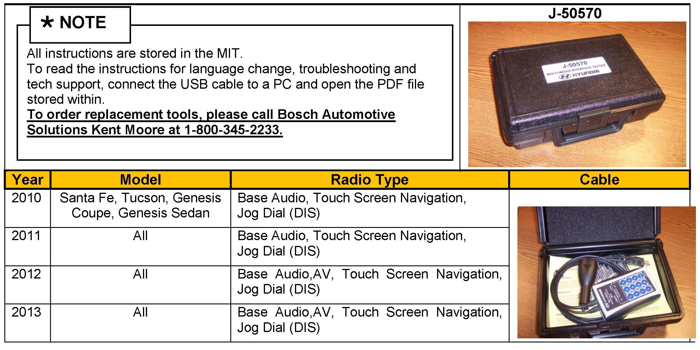
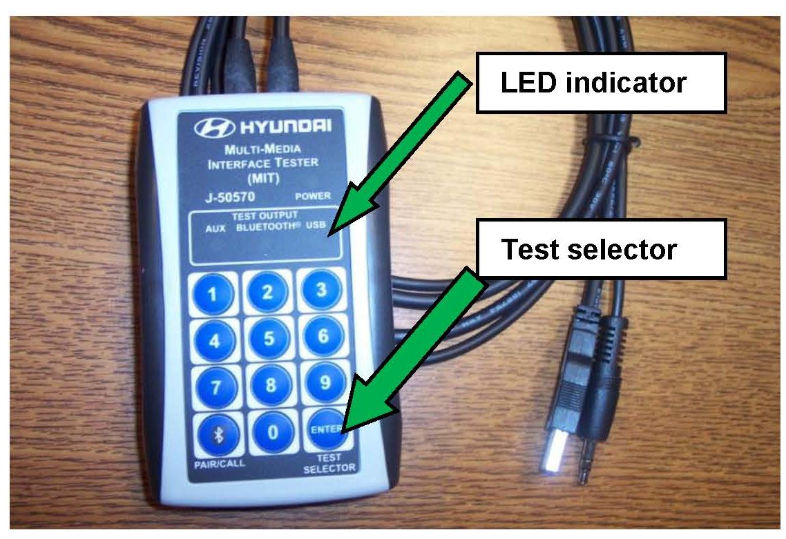
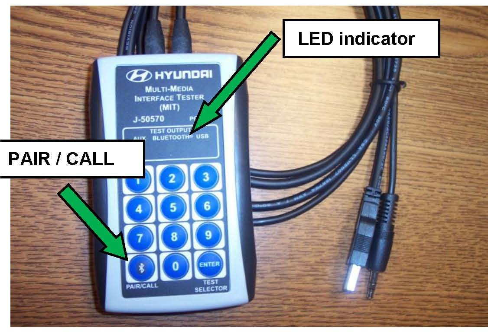
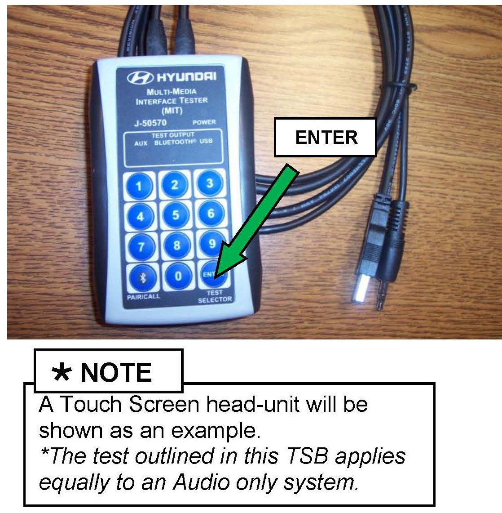
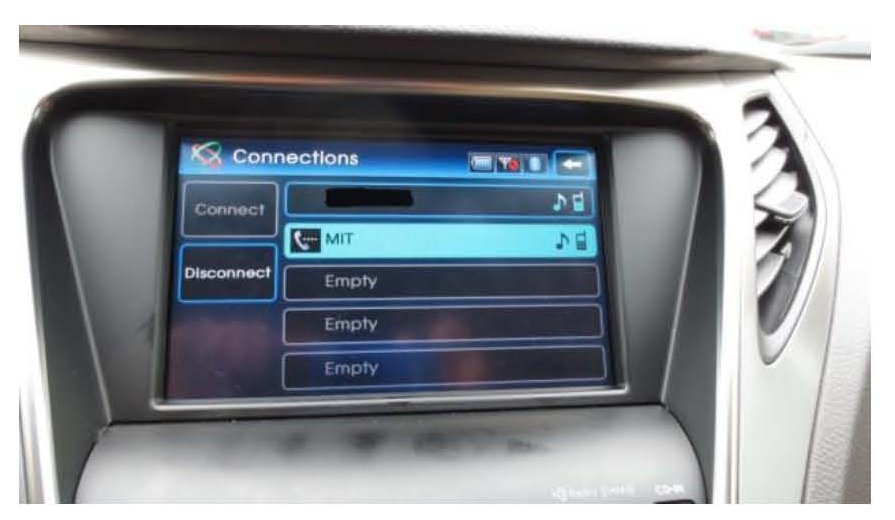
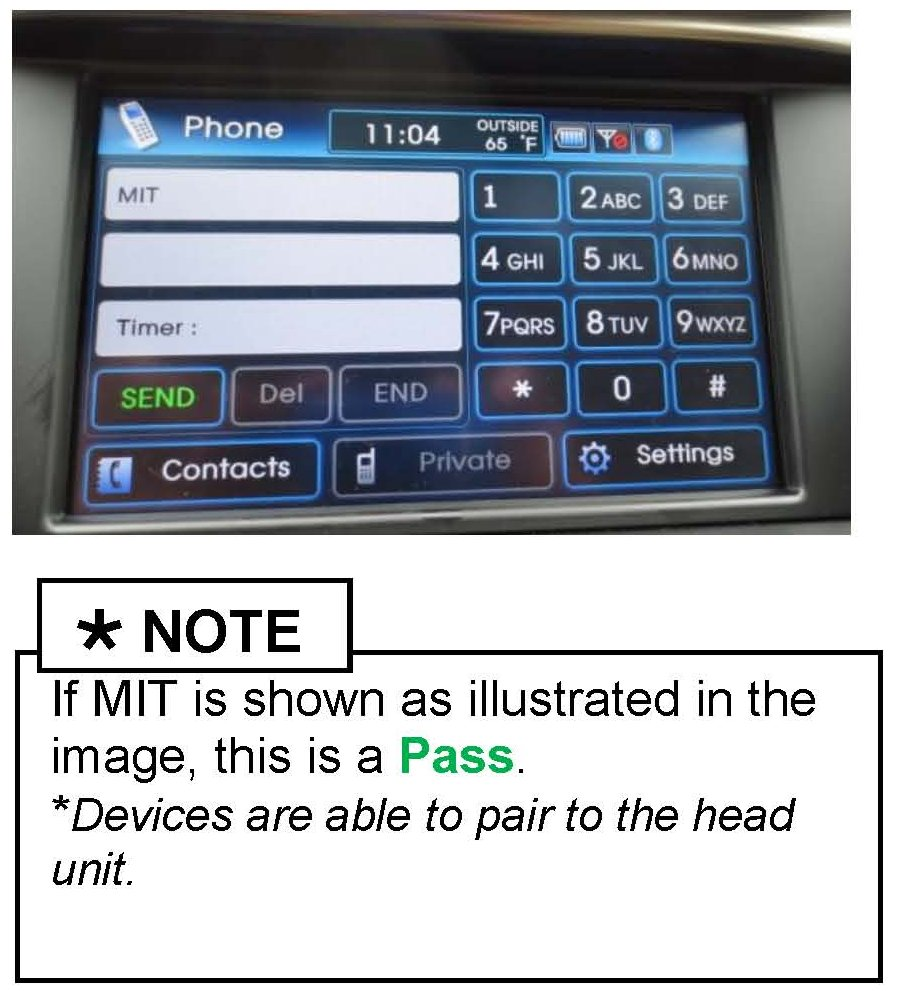
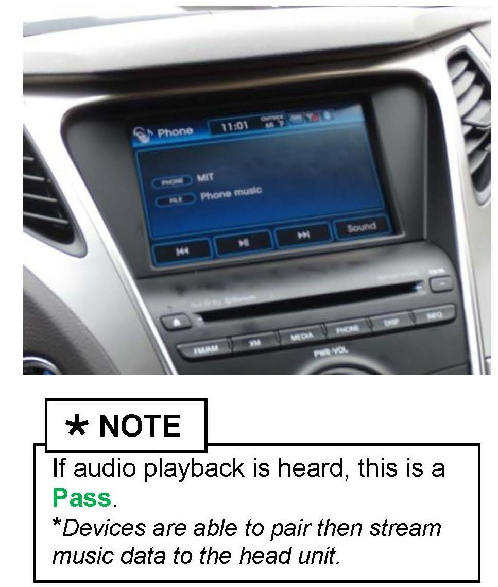
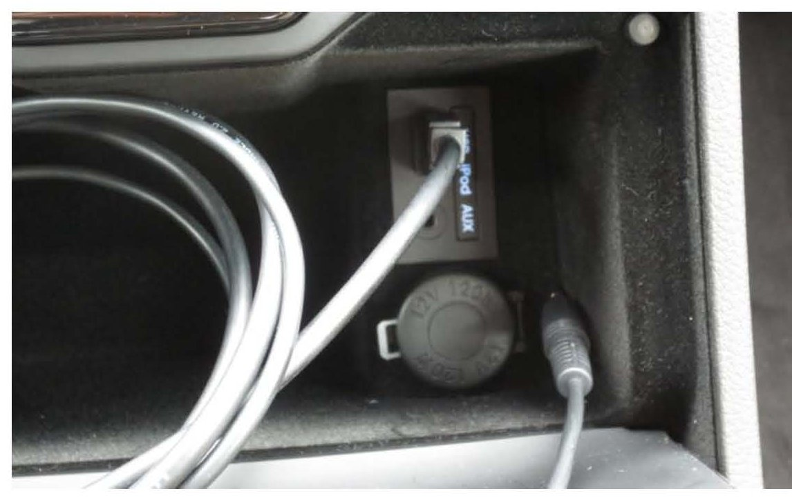
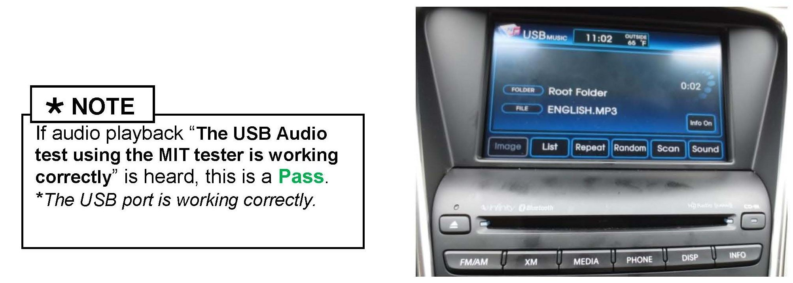
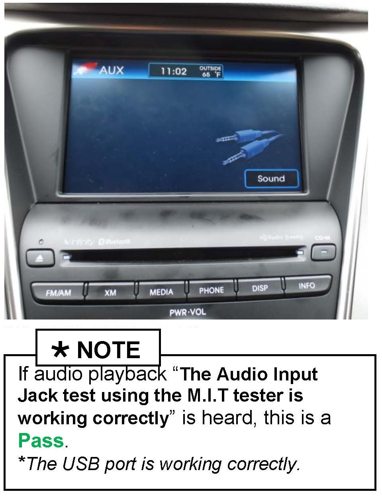

Audio/Cell Phone - Multi-Media Interface Tester (MIT)
GROUPElectrical
DATE
JANUARY 2013
NUMBER
13-BE-001
MODEL(S)
GALL 2010 - 2013MY
SUBJECT:
MULTI-MEDIA INTERFACE TESTER (MIT)
DESCRIPTION:
The MIT is used to confirm functionality of an Audio or NAV unit's ability to successfully do the following:
1) Connect to a Bluetooth enabled device.
2) Bluetooth streaming Audio (if supported by the head-unit)
3) Play USB music files through the USB port.
4) Play audio files via the AUX jack.
To confirm head-unit functionality, the MIT device plays an audio file corresponding to one of the connection verifications that has been successfully completed. If an audio playback is heard corresponding to the test attempted, the head-unit has passed the test.
Refer to the user manual stored on the MIT's internal memory for exact operational pass/fail.

Applicable Vehicles:
2010 - 2013MY vehicles equipped with Bluetooth hands-free head-unit, a USB jack and/or an AUX jack.
PHONE PAIRING USING THE MIT
1. Disable all Bluetooth devices near or in the vehicle.
2. Connect the USB of the MIT device to the USB in the vehicle.
*DO not connect the AUX connector

3. Press the test selector button until the LED indicating Bluetooth is illuminated.
*This selects the Bluetooth connection test

4. Press and release the PAIR/CALL button.
The LED will blink slowly while requesting to pair to the vehicle.
5. Enter phone pairing mode on the head-unit.
6. Once the head-unit recognizes the MIT, it will display a 4 digit code on its display and the three LED indicator lights on the MIT will blink.

7. Next enter the head-unit code with the MIT keypad and press the ENTER button on the MIT.
8. The LED will blink slowly while pairing is in progress and change to a quick flash once pairing is successful.

9. If Bluetooth pairing was successful using the MIT, the head-unit will display its normal connection pass/fail message.

10. *Use the normal paired phone browse method to view the MIT device shown/registered in the head-unit as a paired device.
AUDIO STREAMING USING THE MIT
(Not applicable for 2009-2012 Genesis Sedan and 2011-2013 Equus equipped with Jog Dial (DIS) Audio System)
11. To confirm audio streaming is functional or supported by the head-unit.
Complete steps 1-10.

12. Press the appropriate button to enable streaming music playback (example, pressing the MEDIA button on the head-unit will change the audio source to phone streaming)
13. If the streaming audio test is successful, the display on the head unit will change to "PHONE and the following audio confirmation will be played back "The Bluetooth pairing test using the streaming audio profile is working correctly"
USB PORT CONFIRMATION USING THE MIT

14. To verify that the USB port is working correctly.
Connect the MITs USB to the vehicle USB receptacle.
15. Press the appropriate button to initiate a source change (example, pressing the MEDIA button on the head-unit will change the audio source to USB audio).

16. Audio playback will begin after the head-unit changes source to USB audio.
AUX JACK CONFIRMATION USING THE M.I.T.
17. To verify that the AUX jack is working correctly.
Connect the M.I.T.s USB and AUX jack to the vehicle's receptacles.

18. Press the appropriate button to initiate a source change (example, pressing the MEDIA button on the head-unit will change the audio source to AUX mode).